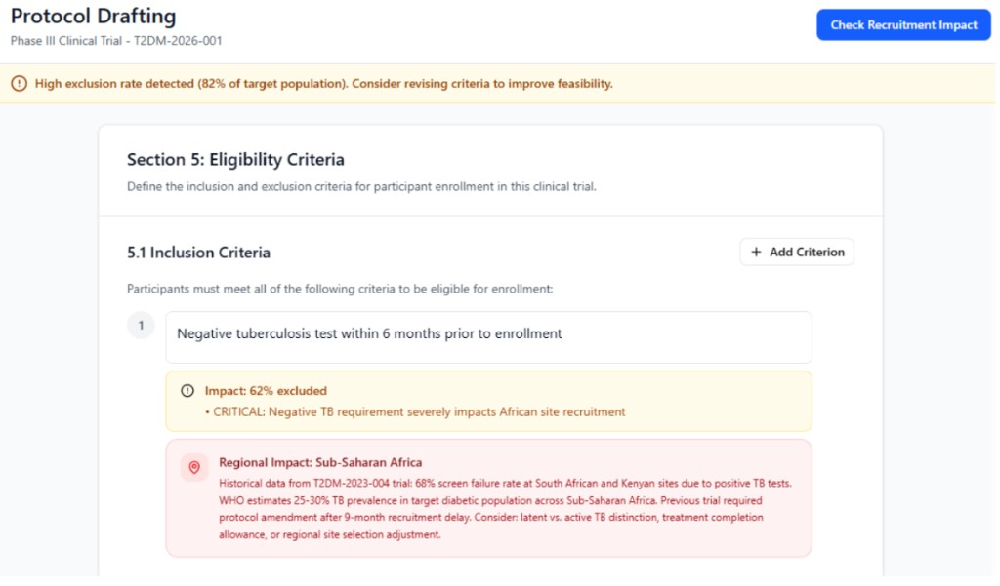

Context
As part of clinical trial data management, I've observed the complexity of protocols and the impact of protocol amendments on clinical operations, data management, and clinical trial sites. While conducting user interviews last semester for another project, I spoke with clinical operations team members. One common theme from the interviews was the impact that protocol design and eligibility criteria have on recruitment. A complex design, or complex set of criteria increase the screen failure rate and slow down recruitment. This got me thinking of if there is a way to see the impact of a protocol design on recruitment, during the protocol writing phase. This would impact not only recruitment, it would eventually impact data collection and trial results as well.
The Market
Medidata
Protocol Optimization / Intelligent Trials
AI-driven protocol optimization capability that can predict impact on patient burden, site performance, and costs in advance.
Gap: Lacks sponsor-specific historyIQVIA
Protocol Design Optimization / Feasibility / Planning Suite
Offers protocol assessment and feasibility offerings.
Gap: External benchmarks onlyThe Audience
Primary Persona
The Clinical Scientist "The Author"
- Job Type
- Lead scientist responsible for writing the scientific protocol.
- Motivations
- Scientific rigor, patient safety, and getting the drug to the next phase.
- Pain Points
- Spending months writing a protocol and then seeing low recruitment; the administrative complexities of Protocol Amendments. Needing to make “on the fence” decisions when balancing the strictness of exclusion criteria to ensure safety with the recruitability of exclusion criteria.
- How they use the tool
- To "stress-test" their eligibility criteria while they are still in the drafting phase.
Secondary Persona
Global Clinical Operations Lead "The Executor"
- Job Type
- Senior Lead responsible for site selection and recruitment timelines.
- Motivations
- Meeting "First Patient In" (FPI) dates and keeping "Screen Failure" rates low.
- Pain Points
- Inheriting a protocol that is "un-executable" at the site level; high costs associated with delayed recruitment.
- How they use the tool
- To provide data-backed feedback to scientists: "If we keep this one exclusion criteria, we lose 20% of our eligible patient pool."
User Insights — Quotes from interviews
"Protocol eligibility criteria doesn't match real world situation for the patient."
— Country Clinical Operations Lead
"If protocol is challenging, this will impact screen failure rate."
— Country Clinical Operations Lead
User Journey
-
1
Trial Activation & Team Assignment
The trial receives a "Go" decision from leadership. A Clinical Scientist (CS), Medical Writer, and Statistician are assigned to begin the design phase.
-
2
Legacy Drafting
The team pulls protocols from similar therapeutic areas or past studies. They copy/paste the inclusion/exclusion criteria into the new document.
Pain Point: Hidden legacy bias. -
3
Initial Design & Collaborative Review
The writer drafts the protocol. Multiple stakeholders (Medical, Safety Science, Regulatory, Clinical Ops) review the document via email or shared drives.
Pain Point: Siloed feedback and no one is looking at "recruitment feasibility" in a data-backed way. -
4
Operational Feasibility & "Guessing"
The Global Operations team estimates recruitment timelines based on the draft. This is often based on historical averages rather than a simulation of the specific criteria in the draft.
-
5
Executive Approval & Locking
The protocol undergoes a final formal review by a governance committee (e.g., Clinical Review Board). Once approved, the protocol is "locked" and cannot be changed without an amendment.
-
6
Site Activation & The "Real-World" Collision
The protocol is sent to 100+ global sites (for Phase 3 trials). Investigators start screening patients.
Pain Point: Sites report that some potential patients are failing a specific, overly restrictive inclusion criteria. Recruitment stalls. -
7
The Amendment Loop The Crisis
The recruitment delay is flagged to leadership. To fix the stall, the team must write a Protocol Amendment.
Pain Point: The Reset. This triggers a total restart of Steps 3, 4, and 5. Every site must be re-trained, and the trial is now behind schedule.
Big Takeaways
1. The Internal Data Blind Spot
The industry standard is to rely on external, aggregated benchmarks (like Medidata or IQVIA). However, these tools don't account for a sponsor's unique historical performance, site relationships, or regional expertise.
Insight: Companies are "data rich but insight poor." They possess years of internal trial data that could predict success.
2. The "Legacy Bias" Trap
Indirect competitors, like Excel trackers and "copy-pasted" PDFs, hurt efficiency.
Insight: The pain point isn't a lack of information; it's a lack of integrative simulation. The audience needs a tool that doesn't just "score" a protocol, but "proves" it against their own historical capabilities before the first review.
The Problem
The Fragmented Intelligence Gap
While pharmaceutical companies possess decades of internal trial data, this "institutional memory" is siloed. Protocol writers (Clinical Scientists) lack a simple, real-time interface to pull operational insights, such as regional recruitment trends or past site performance, into their draft.
The Criteria Complexity Blind Spot
Eligibility criteria are currently viewed as a list of independent requirements rather than an interconnected system. It is not clear how multiple criteria interact with one another to shrink the eligible patient pool.
Example
A protocol might have two standard criteria (e.g., a specific age range and a specific biomarker). Independently, each might be fine, but when interacted, they may exclude a significant percentage of the target population. Without a simulation tool, this "compounding exclusion" is only discovered after sites are activated, leading to costly delays and protocol amendments.
Equity impact: Additionally, exclusion criteria that seem neutral on paper can disproportionately screen out specific ethnic or cultural groups.
The Goal
Clinical Scientists
Get real-time feedback about the protocol design's impact on recruitment and avoid protocol amendments.
Global Operations
Simulate recruitment scenarios and share feedback on potential risky designs.
Business / Company
Fewer recruitment-related protocol amendments.
Sites
Fewer protocol amendments and delays to the first patient in.
Feature Prioritization & MVP Definition
| Feature | Reach | Impact | Confidence | Effort | Result |
|---|---|---|---|---|---|
| Real-time eligibility simulator | 100% | High | High | Med | MVP |
| Historical trial comparator | 80% | High | Med | Med | MVP |
| Exportable feasibility summary (for presentations) | 90% | Med | High | Low | V2 |
| Auto-suggest criteria tweaks | 60% | High | Med | High | V2 |
The Protocol Recruitment Simulator parses draft criteria and simulates against blended sources:
RWD
Real-world patient populations; can pull patient population information (e.g., Flatiron Health data) with incidence rates to ground simulations in real-world prevalence.
Internal Study Results
Historical screen/enrollment rates + screen failure logs from IxRS
Operational Metadata
Site activation/FPI history, regional performance (e.g., APAC screen rates 15% higher)

Launch & GTM Strategy
Validation
Use 1–2 historical trials, replay them through the tool, and compare predictions vs actual recruitment performance.
Pilot — One Therapeutic Area & Region
- Choose oncology protocols in Europe for new Phase 3 trials.
- Make it opt-in but targeted: invite specific protocol teams.
Broader Rollout
Expand to more therapeutic areas / geographies conditional on Phase 1 rollout metrics.
Channels
- In-tool nudges when a new protocol shell is created.
- Training for protocol authors, Operations, and Science (short workshops).
- Partner with a senior Clinical Ops champion to present results at protocol review meetings.
Measuring Success
North Star Metric
Percent of new protocols that hit their initial recruitment milestone (e.g., first 50 randomized patients) without an eligibility-related amendment.
Leading Indicators
- Number of protocols using the tool during the drafting phase.
- Number of iterations on criteria driven by tool insights (e.g., criteria changed after simulation).
Lagging Indicators
- Reduction in recruitment-related amendments.
- Reduction in time from protocol finalization to FPI by 20%.
Counter Metrics
- Time to write a protocol should not increase by more than 25%.
- No increase in major protocol deviations due to over-relaxed criteria.
Risks & Tradeoffs
Regulatory Lock-in
Simulations misinterpreted as prescriptive guidance.
Label outputs as "predictive only"; maintain audit trails.
Prediction Accuracy
Historical bias skews future simulations.
Phase 0 validation; confidence scores. Ensure real-world data is also taken into account for accurate predictions.
Future Iterations
- More sophisticated scenario planning (e.g., budget vs recruitment trade-off).
- Expand beyond eligibility to operational design elements (visit schedule complexity, procedure burden).
- Structured feedback loop from live screening data, to let global teams adjust risky criteria.
Closing
Protocol complexities in eligibility criteria impact operational activities like recruitment. The Protocol Recruitment Simulator equips scientists and operations teams with real-time feedback on design feasibility, avoiding recruitment delays and the costly amendment cycle.